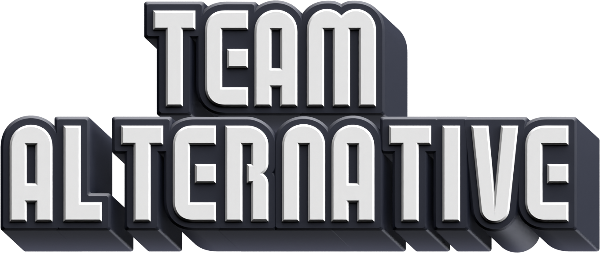

Game Description
Super Mario Bros. Extreme Adventure is a NSMBW fan-made in development by The Team
Alternativesince
October 2022 and it uses the same Game Engine of Newer
Super Mario Bros Wii.
There are 6 New Worlds (5 + 1 Bonus Worlds) with a Real Life based theme for each world.
There are 15 Levels for each world (12 + 3 Bonus Levels) and a New Power-Up: The Note Suit.
At the moment there is NO release date
for the Full Version, but we are sure that it will be
released until the beginning of 2025.